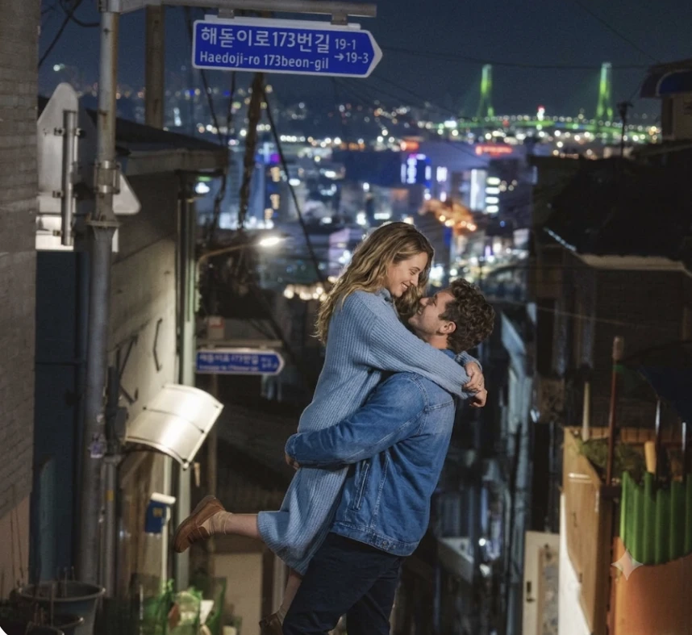

부산 · 한국2박 3일
영도 골목과
새벽 어시장
흰여울마을 계단길을 따라 내려가 해녀촌에서 늦은 아침을. 관광 지도에 없는 바다 쪽 카페 세 곳.
부산 가이드 전체 보기 →관광지에서 한 골목 더.
현지인이 직접 고른 장소와 루트로
도시를 동네처럼 여행하는 법.

여행자 10명 중 7명은 "유명한 곳은 너무 붐볐다"고 말해요.
그래서 우리는 그 동네에 사는 사람에게 직접 물어요.
현지 큐레이터와 여행자가 함께 만든 기록이에요.

"지도 앱엔 없는 골목 식당에서 할머니가 끓여준 국밥. 이번 여행에서 제일 오래 기억날 장면이에요."
지은, 29 · 부산 1박 2일
흰여울마을 계단길을 따라 내려가 해녀촌에서 늦은 아침을. 관광 지도에 없는 바다 쪽 카페 세 곳.
부산 가이드 전체 보기 →새벽 다랑쉬오름, 오후엔 종달리 동네 책방까지.
가모강 징검다리와 동네 빵집, 오래된 목욕탕.
28번 트램 대신 걸어서 오르는 알파마. 동네 사람들이 저녁에 모이는 전망대 두 곳과 정어리 굽는 골목 식당.
이 루트로 상담받기 →올드타운 일요 시장 다음 날, 산 아래 커피 농장으로.
인쇄소 골목의 노포와 공장 건물 속 작업실들.
오토바이로 20분, 숲길 끝의 작은 해변. 해 질 녘엔 미케 해변의 동네 해산물 포장마차로.
이 테마의 여행지는 곧 추가돼요.

메일 hello@local-lab.app
평일 10:00 – 18:00
우리 동네 큐레이터 지원하기
숨은 장소 제보하기
여행 후기 남기기